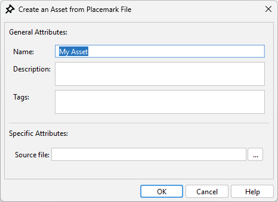
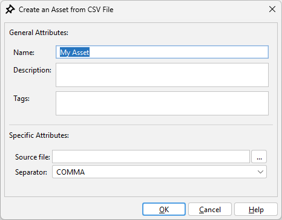
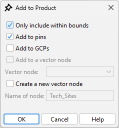

|
|
EOMasters Toolbox | |
This type holds a list of locations on Earth. The sites can be defined in different coordinates reference systems (CRS). They are converted into the destination CRS when added to a product.
Sites can be imported from the placemark files SNAP uses. Either the text or the XMl files. The styling of the placemarks is stored with sites and applied when added to a product later.

A CSV file can be used to import Sites into the Asset Library too.

This CSV file has only minimal requirements to the content format. Each line of the file represents a site. Each site must provide the following columns in this order:
Lines can be marked as comment by starting this line with the # character and thus be ignored. The columns must be separated by one of four separator characters.
It is configurable when importing the sites which separator is used. If the CSV separator is used within one of the column values, then it must be enclosed in double quotes.
Optionally each site can be amended with additional information. Additionally, a description, the CRS and the styling
can be provided as fourth, fifth and sixth column.
The description provides a short descriptive text, the CRS
column provides the coordinate reference system in which the coordinates are given. The CRS must be specified as EPSG
code (e.g., EPSG:32645). If the CRS is not explicitly defined, then WGS-84 is assumed. The style column can be used to
change how the sites are displayed.
The styling follows a CSS format. There are 6 attributes available.
plus, cross, star,
square, circle or pin.
Example of a CSV file using a comma as separator:
#name,x,y,description,crs,style Google,37.4220,-122.0841,Large tech company,EPSG:4326,"stroke:255,0,0;fill:200,0,20;symbol:cross" Facebook,37.4842,-122.1484,Social media giant Amazon,47.6062,-122.3321 Netflix,4121447,592047,Streaming service,EPSG:32610,"stroke:127,127,0;fill:0,0,255;symbol:cross" Apple,37.3229,-122.0322,Consumer electronics company,EPSG:4326,"stroke:255,0,0;fill:0,0,255;symbol:star"
When adding sites to a product you have several options on how these are added.
